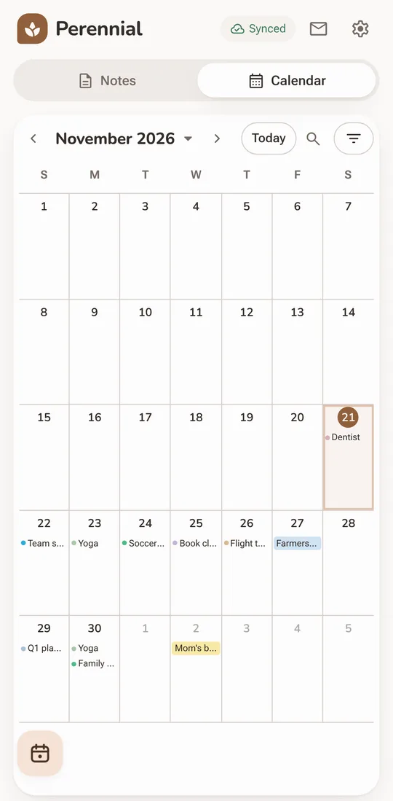
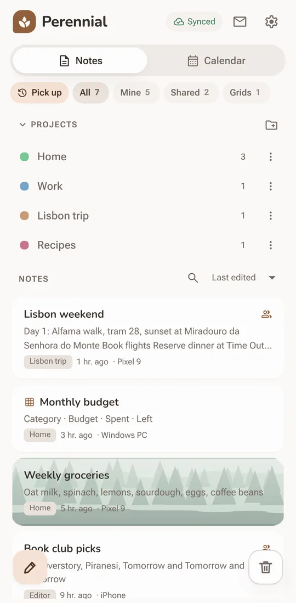
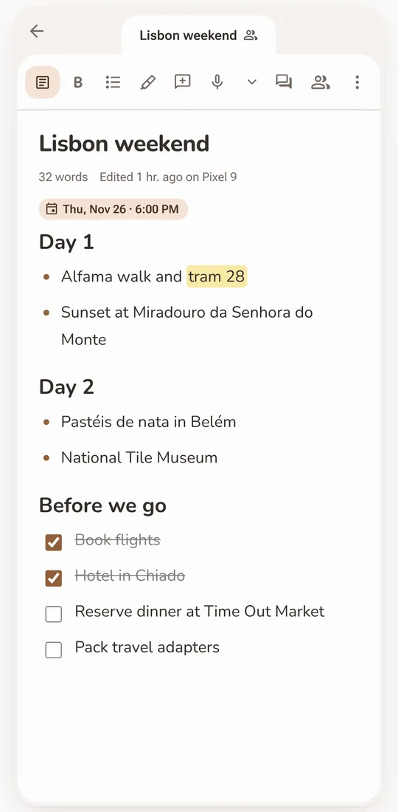

edit_note
Notes that feel good to write
Headings, checklists, highlights, tables, images and voice typing, with pinch-to-zoom text that stays exactly where you left it.
Perennial is a calm, private home for your notes, grids and plans. Write it down once, and it's there on your phone, your computer and the web, quietly in sync.



A quiet place for the things you don't want to forget, and the people you share them with.
No clutter, no ads, no noise. Just the tools you reach for every day, designed to feel light.
Headings, checklists, highlights, tables, images and voice typing, with pinch-to-zoom text that stays exactly where you left it.
Budgets, trackers and lists in a simple spreadsheet with formulas, right beside your notes.
Turn a note into an event, set reminders, and bring in Google Calendar so everything lives together.
Invite people as editors or viewers and write together in real time. Shared notes stay private to the people you choose.
Hold the logo to slip into a private space for gifts, journals and anything just for you. Hold again to return.
Fix grammar, tidy a list or turn "dinner Friday at 7" into an event. Off until you turn it on.
Perennial is in closed testing on Google Play. Join the group, opt in, and you'll get early builds and a direct line to shape what comes next.
The testing link only works after you've joined the group with the same Google account.
The desktop app keeps everything you have on your phone, with space to spread out.
Effective November 21, 2026
Perennial is a note-taking and calendar app for Android, Windows, Mac and the web. This policy explains what information Perennial collects, how it is used, and the choices you have. Perennial is run by an independent developer, referred to here as "we".
You can use Perennial without signing in. Your notes, grids, projects, events and settings are then stored only on your device, and nothing is sent to us. Sharing, comments, attachments, AI tools and Google Calendar need an account. When you sign in, Perennial asks before adding the notes on your device to your account. When you sign out, you choose whether to keep a copy of your notes on the device. Your account keeps everything either way.
We do not use advertising, ad identifiers, tracking pixels or third-party analytics, and we never sell your information.
AI tools are off unless you turn them on. When you use one, our server sends only what that tool needs to Google's Gemini model (through Google Cloud) and returns the result to you:
We do not keep what is sent after the request, it is not used to train AI models, and only a daily count of AI uses is recorded so we can enforce limits.
You can link Perennial to Wayfinder Social, a separate app from the same developer, from the approval screen it opens. Nothing is shared until you approve it. Once linked, Wayfinder Social can read the notes in the scope you choose (one project or all your notes) and, if you allow it, save notes and events into your Perennial account. You can disconnect it at any time in Perennial Settings, which ends its access right away. Deleting your Perennial account also removes every link.
If you choose to connect Google Calendar, Perennial asks Google for permission to:
calendar.readonly), so your Google events can appear in the Perennial calendar.calendar.app.created), used only if you turn on two-way sync, so your Perennial events stay in sync with it. Perennial does not change or delete events in your other calendars.Copies of event details (title, time, place, description and calendar color) are stored in your Perennial account so they show on all your devices. The permission Google gives Perennial is stored on our server, is never shown to any device, and is used only to keep your calendar in sync. You can disconnect at any time in Perennial Settings, which deletes the stored events and revokes the permission. You can also remove access at myaccount.google.com/permissions.
Perennial's use and transfer of information received from Google APIs adheres to the Google API Services User Data Policy, including the Limited Use requirements. Google Calendar data is used only to provide the calendar features you see in Perennial. It is not used for advertising, not sold, not used to train AI models, and not read by people except when you ask us for help, when needed for security, or when required by law.
If you report something, we receive the reason you chose, any details you add, a copy of the reported title and text, and the account IDs and emails of you and the person reported. We use this only to review the report and enforce our rules, keep it for up to a year after it's closed, and never tell the other person who reported them. People you block are stored in your account settings so their invites can be turned away. Filtering strong language and blurring images from others happens on your device and sends nothing.
Perennial stores data with Google Firebase and Google Cloud in the United States. Data is encrypted in transit and at rest. Access to each note or event is limited by security rules to its owner and the people it is shared with.
Your content is shared only with the people you invite, with the role you choose (editor or viewer), and with any app you connect yourself. We share information with service providers that run Perennial (Google Firebase, Google Cloud, Google's Gemini model for the AI tools you use and, for paid plans, Google Play) only as needed to operate the app, or when required by law.
Perennial is not directed to children under 13, and we do not knowingly collect information from them.
If this policy changes, we will update the date above and, for significant changes, let you know in the app.
Questions or requests: neonamagashi@gmail.com
Effective November 21, 2026
By using Perennial you agree to these terms. If you don't agree, please don't use the app.
You're responsible for activity on your account and for keeping your sign-in secure. You must be at least 13 years old to use Perennial.
You own what you write. You give Perennial permission to store, sync and display your content only so the app can work for you and the people you share with. You're responsible for what you share and for having the right to share it.
Perennial is for your own notes and for working with people you choose. Anything you share with others must follow these rules. Don't use Perennial to create, store or share:
Don't try to access accounts or data that aren't yours, and don't interfere with how Perennial runs.
Reporting and blocking. You can report a shared note, event, invite or person from its menu, and block anyone so their invites stop reaching you and you leave what they've shared. We review reports and may remove content, limit sharing, or suspend or close accounts that break these rules, with or without notice.
The free plan includes notes, sync, sharing, the calendar and reminders, with limits on attachment size and daily AI use. Perennial Plus is an optional paid subscription with higher limits, billed through Google Play. You can cancel any time in Google Play; access continues until the end of the paid period. Refunds follow Google Play's policies.
AI suggestions can be wrong. Review them before relying on them, especially for math, money, health or legal matters.
Features such as Google Sign-In and Google Calendar are provided by Google and are also subject to Google's terms.
We work to keep Perennial reliable, but the app is provided "as is", without warranties. Keep your own exports of anything important. To the extent the law allows, we aren't liable for lost data or indirect damages from using the app.
We may update these terms and will change the date above when we do. You can stop using Perennial and delete your account at any time.